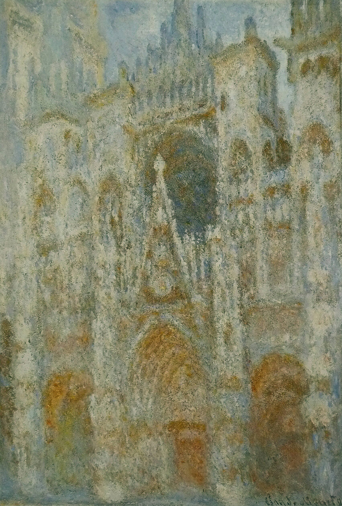
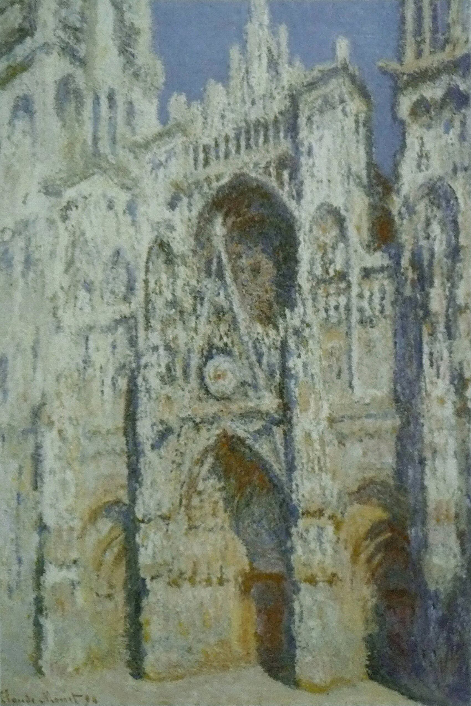
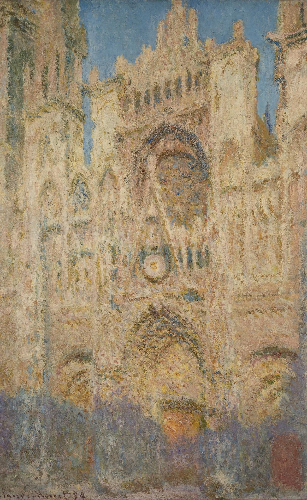

같은 성당, 시간에 따라 달라지는 색

차가운 파랑과 보라아침 — 푸른 그늘 속의 돌루앙 대성당, 아침 햇살 (푸른 조화) · 클로드 모네 · 1894
환한 크림색과 금빛정오 — 하얗게 타오르는 돌루앙 대성당, 정오의 햇살 · 클로드 모네 · 1894
따뜻한 주황과 장밋빛해 질 녘 — 주황빛으로 물든 돌루앙 대성당, 해 질 녘 · 클로드 모네 · 1894 돌은 한 번도 움직이지 않았습니다. 바뀐 것은 빛의 색뿐입니다.